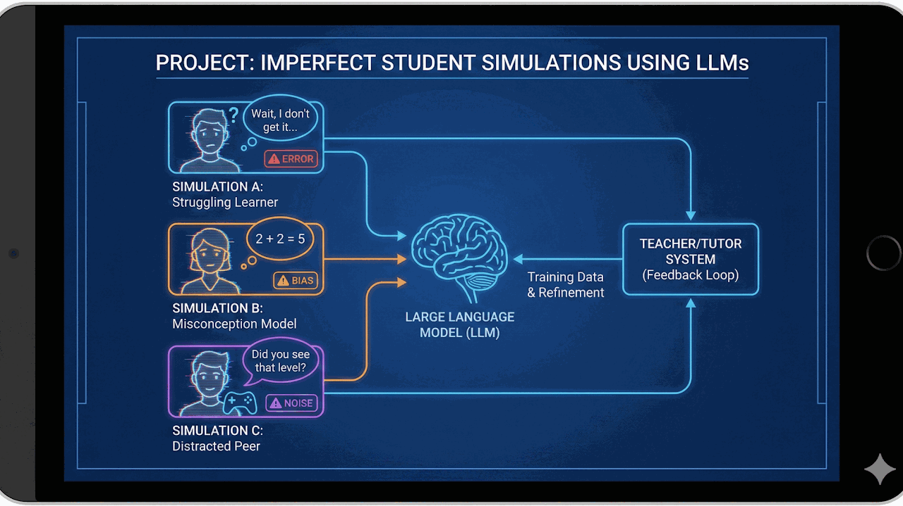

Implicit Entity Recognition In Text
Eden Moran
Implicit entity recognition in text using contextual inference and discourse-level cues.
Current supervision projects in the M.Sc. Intelligent Systems track, focused on active student research directions.
Eden Moran
Implicit entity recognition in text using contextual inference and discourse-level cues.

Omri Sasson
Imperfect student simulations with LLMs to model realistic misunderstandings and learning gaps.

Niv Cohen
Adaptive diagnostic questioning with LLMs for high-value information acquisition in clinical settings.

Yigal Meshulam
Decentralized multi-robot task allocation under zero-knowledge constraints and minimal signal sharing.

Matan Chazanovitz
Selective super-resolution that boosts degraded regions while preserving clean image areas.